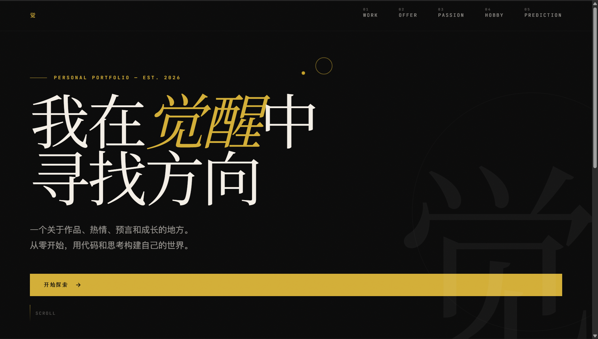

01 / Work
我的作品
每一个项目都是一次从零到一的探索。
不完美，但真实。
个人网站 — 觉
你正在看的这个网站。我提出想法和审美方向，AI 帮我实现代码。从第一版到现在的版本，经历了多次推翻重来。它还在生长。我所信奉的是长期主义——这将是一个伴随我、会迭代一辈子的网站。这只是第一版。

Minimal WPM Tracker
一个极简的阅读速度追踪工具。记录每次阅读的 WPM（每分钟阅读词数），可视化趋势，帮你保持阅读节奏。做这个的起因是：我想知道自己读书到底快不快，但市面上的工具都太重了。
GitHubType Ledger
一个 Windows 桌面小工具，记录每天打了多少字。所有数据存在本地，不上传、不联网。隐私优先。做这个是因为我好奇自己一天下来到底敲了多少键盘——结果比我想象的多。